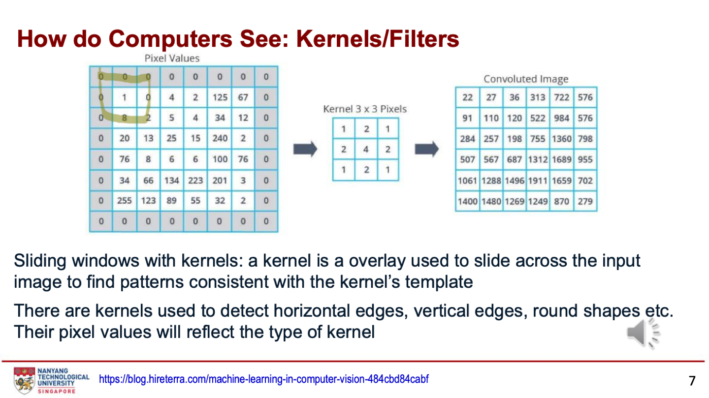
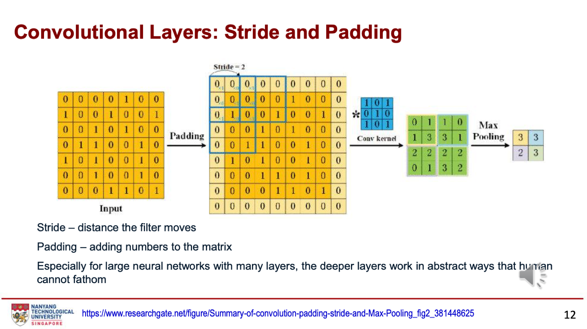
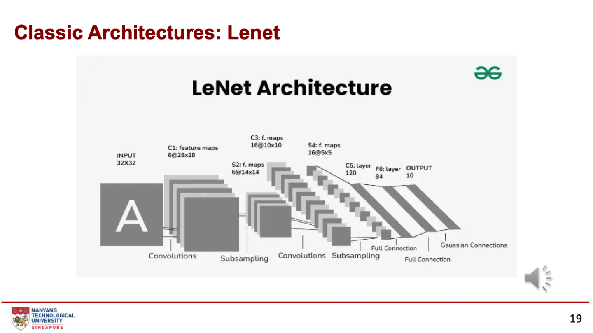
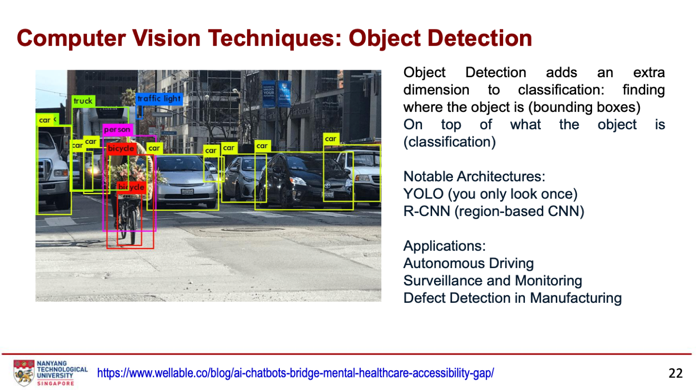

第五周：计算机视觉
NLP 让计算机“说”，计算机视觉让计算机“看”。本周从“图片就是数字矩阵”开始，讲卷积怎么算、步幅和补边怎么影响尺寸、CNN 由哪几层组成，再到 LeNet、AlexNet、目标检测和 IoU，最后是图像生成和多模态模型。
What is Computer Vision? How do Computers See?｜图片就是数字
本章图表 / 方法：CV 定义；像素矩阵；RGB 三通道；滑动窗口；卷积核（第 3–7 页）。
- 定义：让计算机理解和处理视觉信息，“像人一样看”。NLP 让计算机“说”，CV 让计算机“看”。
- 基于深度学习的 CV 需要海量数据，模型才能学会看边缘、形状等特征。近年的进展主要来自 CNN。
| 概念 | 含义 |
|---|---|
| 像素矩阵 | 计算机把图片看成数字矩阵，每个数是该像素的颜色强度 |
| RGB 三通道 | 彩色图有红、绿、蓝三个矩阵，所以是 3 个通道；灰度图只有 1 个 |
| Sliding window | 不一次看整张图，而是用固定大小的窗口在图上滑动，在不同位置找物体或提取特征；窗口大小可调，适应大小物体 |
| Kernel / filter | 在图上滑动的小模板，找和它形状一致的模式；有检测横边、竖边、圆形等的卷积核 |
Applications & Traditional vs Deep Learning｜应用与两种做法
本章图表 / 方法：自动驾驶、Robotaxi、人脸识别、AI 绘图；传统方法与深度学习对比图（第 8–9 页）。
- 自动驾驶：改变通勤方式，催生 Robotaxi。
- 人脸识别：政府能在上百万人中瞬间找到一个人。
- 生成式 AI：几秒钟生成图片和艺术作品。
| 传统方法 | 深度学习 |
|---|---|
| 先人工提取特征，再训练分类器 | 模型自动学会提取特征，并直接完成分类 |
Convolutional Layers｜卷积怎么算
本章图表 / 方法：8×8 像素与 3×3 卷积核例子；卷积五步；步幅、补边与最大池化示意；特征图热力图（第 7、10–13 页）。
每个卷积核本质上是一个小特征检测器。训练时卷积核学会识别边缘、曲线、纹理甚至更复杂的形状，这个过程叫卷积，CNN 由此得名。深层卷积核学到的东西人往往看不懂。
卷积五步（第 11 页）
- Overlay：把卷积核放在图像的一块区域上。
- Element-wise multiplication：对应位置相乘。
- Summation：全部加起来得到一个数。
- Output：这个数成为输出图（feature map / activation map）的一个像素。
- Sliding：按步幅（stride）滑到下一个位置，重复，直到铺满整张图。


算第一个输出：左上角 3×3 区域是 [[0,0,0],[0,1,0],[0,8,2]]，卷积核是 [[1,2,1],[2,4,2],[1,2,1]]：
0×1 + 0×2 + 0×1
+ 0×2 + 1×4 + 0×2
+ 0×1 + 8×2 + 2×1 = 4 + 16 + 2 = 22 ← 输出左上角的 22往右滑一格，区域 [[0,0,0],[1,0,4],[8,2,5]] → 0 + (2 + 8) + (8 + 4 + 5) = 27，和课件第二个值一致。
Stride 和 Padding（第 12 页）


- Stride：卷积核每次移动的距离。
- Padding：在矩阵边缘补数（通常补 0）。
- 尺寸公式：
输出 = ⌊(N + 2P − K) / S⌋ + 1（N 输入边长、P 补边、K 卷积核、S 步幅）。
| 例子 | 计算 | 输出 |
|---|---|---|
| 第 7 页：8×8，3×3，不补边，步幅 1 | (8 − 3) / 1 + 1 | 6×6 |
| 第 12 页：7×7，3×3，补 1，步幅 2 | (7 + 2 − 3) / 2 + 1 | 4×4，再 2×2 最大池化 → 2×2 |
| 第三周 CNN：28×28，5×5，不补边，步幅 1 | 28 − 5 + 1 | 24×24 |
Feature map（第 13 页）：像热力图一样显示 CNN“看到”并用来分类的区域，卷积核滑过整张图时，匹配的区域会被高亮。
Convolutional Neural Networks｜CNN 三种层
本章图表 / 方法：激活函数作用；ImageNet 数据集；CNN 结构与三种层的说明（第 14–17 页）。
| 层 | 作用 |
|---|---|
| Convolution | CNN 的核心。小而可学习的卷积核像聚光灯一样在图上滑动，每个核专门识别一种特征（边缘、曲线、纹理），算点积得到特征图 |
| Pooling | 下采样特征图：减少信息量但保留最重要的特征，让训练更便宜，也帮助防止过拟合 |
| Fully connected | 多次卷积和池化后，把特征图展平（flatten）送进全连接层，用 softmax 完成最终分类 |
- 激活函数（第 14 页）：决定神经元是否“激活”；没有它，网络只能学线性关系。
- ImageNet（第 15 页）：2010 年代初，“大量高质量标注数据”是一个范式转变。研究者从网上收集了数百万张图片，清洗、标注后用来训练 CNN。
Classification & Classic Architectures｜LeNet、AlexNet
本章图表 / 方法：图像分类任务定义；LeNet 结构；AlexNet 结构；ImageNet 历年最佳准确率（第 18–21 页）。
图像分类：给数百万张图打上类别标签。输入是标好“猫 / 狗”的图（监督学习），输出是各类别的概率分布。著名数据集：ImageNet、CIFAR。


| LeNet 层 | 操作 | 输出 |
|---|---|---|
| Input | — | 32×32×1 |
| C1 | 6 个 5×5 卷积核 | 6 @ 28×28（32 − 5 + 1） |
| S2 | 2×2 下采样 | 6 @ 14×14 |
| C3 | 16 个 5×5 卷积核 | 16 @ 10×10 |
| S4 | 2×2 下采样 | 16 @ 5×5 |
| C5 | 120 个 5×5 卷积核（相当于全连接） | 120 |
| F6 | 全连接 | 84 |
| Output | 全连接 | 10（数字 0–9） |
AlexNet（第 20 页）：更大更深。C1 是 96 个卷积核、输出 55×55；C2 256 个（27×27）；C3、C4 各 384 个，C5 256 个（13×13）；然后 FC6、FC7 各 4,096 个神经元，FC8 输出 1,000 类（ImageNet）。
ImageNet 准确率（第 21 页）：2011 年最佳约 50%；AlexNet（2012）跳到约 63%；ResNet（2016 前后）约 81%；2020 年后超过 90%。
Object Detection & IoU｜检测“在哪里”，用 IoU 打分
本章图表 / 方法：街景检测框（第 22 页）；补充讲义 CA6001_Intersection Over Union.pptx 10 页；Intersection_Over_Union_Tutorial.ipynb。


- 目标检测在分类之外多了一个维度：找出物体在哪里（bounding box）。
- 经典架构：YOLO（You Only Look Once）、R-CNN（Region-based CNN）。
- 应用：自动驾驶、监控、制造业缺陷检测。
IoU：预测框和真实框有多重合
预测框几乎不会和真实框逐像素一致，所以不能只问“对不对”，需要一个分数：完全重合 = 1，不重合 = 0。IoU 就是把 Jaccard 指数用在两个框上。
IoU(A, B) = |A ∩ B| / |A ∪ B| = |A ∩ B| / (|A| + |B| − |A ∩ B|) 范围 [0, 1]五步算法：① 交集的角：x、y 各取最小值里的最大、最大值里的最小 ② 宽和高小于 0 就截成 0（不重合时面积为 0）③ 交集面积 = 宽 × 高 ④ 两个框各自面积 ⑤ 并集 = |A| + |B| − 交集，再相除。
| 例子：真实框 [50, 50, 150, 150]，预测框 [70, 70, 170, 170] | |
|---|---|
| 交集的角 | (70, 70) 到 (150, 150) |
| 交集面积 | 80 × 80 = 6,400 |
| 两个框面积 | 100 × 100 = 10,000，各一个 |
| 并集 | 10,000 + 10,000 − 6,400 = 13,600 |
| IoU | 6,400 / 13,600 = 0.4706 |
四种情况：部分重合 0.47；完全重合 1.00；不重合 0.00；一个框完全包含另一个（70×70 的预测框在 100×100 的真实框里）0.49。
def calculate_iou(box1, box2):
x1, y1 = max(box1[0], box2[0]), max(box1[1], box2[1]) # 最小值里取最大
x2, y2 = min(box1[2], box2[2]), min(box1[3], box2[3]) # 最大值里取最小
inter = max(0, x2 - x1) * max(0, y2 - y1) # 截到 0：不重合时为 0
area1 = (box1[2] - box1[0]) * (box1[3] - box1[1])
area2 = (box2[2] - box2[0]) * (box2[3] - box2[1])
union = area1 + area2 - inter
return 0.0 if union == 0 else inter / union从 IoU 到判断：阈值 τ
| 结果 | 条件 |
|---|---|
| TP | IoU ≥ τ，预测框匹配上真实框且重合够好 |
| FP | IoU < τ，或者框画在没有物体的地方 |
| FN | 有真实物体，但没有预测框和它重合得够好 |
- τ 怎么选：通用检测（COCO）用 0.5；自动驾驶 0.75；医学影像更严，如 0.9。τ 越高，FP 越少、FN 越多。
- mAP：IoU → 按 τ 判 TP / FP / FN → 每类算 precision 和 recall → AP（PR 曲线下面积）→ 对所有类平均得到 mAP。COCO 报告 mAP@[0.5:0.95]：在 0.50、0.55 … 0.95 十个阈值上取平均，单个阈值可以被“钻空子”，十个不行。
易错：算交集时漏了 max(0, …)，两个框不重合时会得到负的宽高，IoU 就错了。
Content Generation & Multimodal Models｜生成与多模态
本章图表 / 方法：扩散模型与 GAN；多模态模型、视觉语言模型、Vision LLM；GAN 生成的假名人；Google Photos 误标事件（第 23–30 页）。
| 方法 | 原理 | 例子 |
|---|---|---|
| Diffusion models | 逐步往图片加噪声，再学习把这个过程反过来（去噪） | Stable Diffusion、Midjourney、DALL-E |
| GAN | 两个网络竞争：生成器造图，判别器找假图；像极小极大游戏，生成器想骗过判别器，判别器想识破 | 假名人照片（第 27–28 页） |
- 多模态深度学习：融合多种数据类型（文本、图像、视频、音频）。每种模态有专门的网络，输出再合成联合表示。例：mixture of experts、Vision LLM。
- Vision Language Models（VLM）：输入图像和文本，输出文本；反过来也能由文本生成图像 / 视频。
- Vision LLM：通用多模态 LLM，每对编码器-解码器负责一种任务（图像描述、物体检测、分割、姿态检测），越来越接近人脑处理多种信息的方式。
Responsible AI（第 30 页）：Google Photos 曾把非裔美国人错标为“大猩猩”，引发公关危机，花了很大力气平息。AI 不完美，需要负责任的 AI 工程师来规范它。
Notebook · LeNet-5 on MNIST｜动手训练 LeNet
本章图表 / 方法：Lenet_Demo.ipynb：数据预处理、模型结构与参数量、10 轮训练结果。
LeNet-5 是 Yann LeCun 等人 1998 年提出的最早一批 CNN，用来识别邮编和支票上的手写数字。
- 预处理：MNIST 是 28×28，LeNet 要 32×32，所以每边补 2 个像素；像素除以 255 归一化到 0–1；标签转 one-hot（10 维）。
- 现代改动：原版用 tanh / sigmoid，这里用 ReLU；池化用平均池化。
- 训练：Adam、categorical cross-entropy（因为标签是 one-hot）、10 轮、batch 128。
| 层 | 输出 | 参数 | 怎么算 |
|---|---|---|---|
| Conv2D 6 个 5×5 | 28×28×6 | 156 | 6 × (5 × 5 × 1 + 1) |
| AveragePooling 2×2 | 14×14×6 | 0 | 池化没有参数 |
| Conv2D 16 个 5×5 | 10×10×16 | 2,416 | 16 × (5 × 5 × 6 + 1) |
| AveragePooling 2×2 | 5×5×16 | 0 | — |
| Conv2D 120 个 5×5 | 1×1×120 | 48,120 | 120 × (5 × 5 × 16 + 1) |
| Dense 84 | 84 | 10,164 | 84 × (120 + 1) |
| Dense 10（softmax） | 10 | 850 | 10 × (84 + 1) |
| 合计 | 61,706 | ||
卷积层参数公式：卷积核个数 × (核宽 × 核高 × 输入通道数 + 1)，“+1”是偏置。
结果：第 1 轮验证准确率 0.9625，第 10 轮 0.9901（训练准确率 0.9922，没有明显过拟合）。
models.Sequential([
layers.Conv2D(6, (5, 5), activation="relu", input_shape=(32, 32, 1)),
layers.AveragePooling2D((2, 2), strides=(2, 2)),
layers.Conv2D(16, (5, 5), activation="relu"),
layers.AveragePooling2D((2, 2), strides=(2, 2)),
layers.Conv2D(120, (5, 5), activation="relu"),
layers.Flatten(),
layers.Dense(84, activation="relu"),
layers.Dense(10, activation="softmax"),
])Notebook · Visualizing Feature Maps｜看 CNN 每层学到了什么
本章图表 / 方法：Feature_Maps_Tutorial.ipynb：用 ImageNet 预训练的 VGG16 提取一张猫图在五个卷积层的特征图。
- 加载 VGG16：在 ImageNet 上预训练，
include_top=False去掉分类层，只要特征提取部分（14,714,688 个参数）。 - 处理图片：缩放到 VGG16 要求的 224×224×3，加一个 batch 维度，做 VGG16 专用预处理。
- 建一个新模型：输入不变，输出改成五个中间层（block1_conv1 到 block5_conv1）的激活值。
- 可视化：每层画 8 张特征图。
| 层 | 学到什么 |
|---|---|
| 浅层（block1、block2） | 边缘、角、简单纹理，看起来像轮廓 |
| 中层（block3、block4） | 把基础特征组合成物体部件（眼睛、轮子、毛发纹理） |
| 深层（block5） | 高度抽象，对复杂模式或整个物体响应；人很难看懂，但包含分类需要的语义信息 |
model = VGG16(weights="imagenet", include_top=False)
outputs = [model.get_layer(name).output for name in layer_names]
feature_map_model = Model(inputs=model.input, outputs=outputs)
feature_maps = feature_map_model.predict(x) # 每层一个 (1, H, W, 通道数) 数组自测
本章图表 / 方法：按考试常见题型整理，先自己答再展开。
1. 一张彩色图片在计算机里是什么？几个通道？
像素数字矩阵，每个数是颜色强度；彩色图有 R、G、B 三个矩阵，3 个通道。
2. 区域 [[60, 7, 98], [165, 159, 147], [187, 204, 165]] 和卷积核 [[1, 0, −1], [1, 0, −1], [1, 0, −1]] 的卷积结果？
(60 − 98) + (165 − 147) + (187 − 165) = −38 + 18 + 22 = 2。
3. 32×32 输入，5×5 卷积，不补边，步幅 1，输出多大？64×64、3×3、补 1、步幅 2 呢？
32 − 5 + 1 = 28；⌊(64 + 2 − 3) / 2⌋ + 1 = ⌊31.5⌋ + 1 = 31 + 1 = 32。
4. CNN 三种层各自的作用？
卷积：用可学习的卷积核提取特征；池化：下采样，减少计算、帮助防过拟合；全连接：展平后用 softmax 分类。
5. 一个卷积层有 16 个 5×5 卷积核，输入 6 个通道，参数多少？
16 × (5 × 5 × 6 + 1) = 2,416。
6. LeNet 为什么要把 MNIST 补到 32×32？
LeNet 原本设计的输入是 32×32，MNIST 是 28×28，每边补 2 像素。
7. 分类和目标检测的区别？检测的两个经典架构？
检测在“是什么”之外还要找“在哪里”（bounding box）。YOLO 和 R-CNN。
8. 真实框 [0, 0, 10, 10]，预测框 [5, 0, 15, 10]，IoU 是多少？
交集 5 × 10 = 50；并集 100 + 100 − 50 = 150；IoU = 1/3 ≈ 0.33。
9. τ = 0.5 时，上一题的预测算 TP 还是 FP？自动驾驶为什么用更高的 τ？
0.33 < 0.5，算 FP（那个真实物体也就成了 FN）。自动驾驶要求定位更准，τ 设 0.75，减少误报，代价是漏报变多。
10. COCO 的 mAP@[0.5:0.95] 是什么意思？
在 0.50、0.55 … 0.95 十个 IoU 阈值上分别算 mAP 再取平均，比单个阈值更稳健。
11. GAN 的两个网络是什么？扩散模型怎么生成图片？
生成器（造图）和判别器（识别假图），互相对抗。扩散模型逐步加噪声直到变成纯噪声，再学习逐步去噪还原。
12. VGG16 浅层和深层特征图有什么区别？
浅层是边缘、角等简单特征，能看懂；深层是高度抽象的物体级特征，难以看懂，但包含分类需要的语义信息。